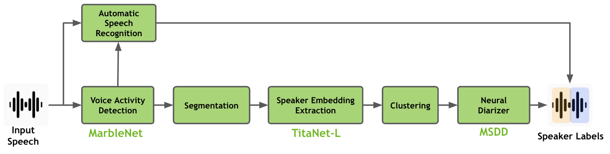
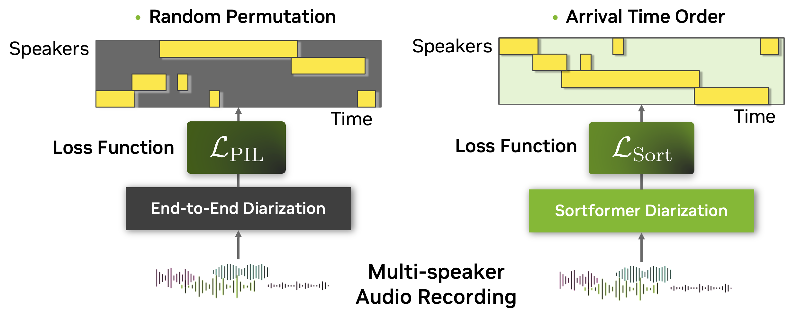
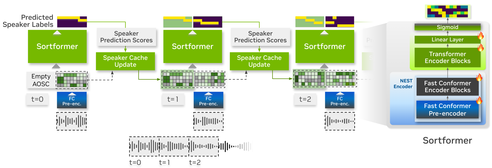
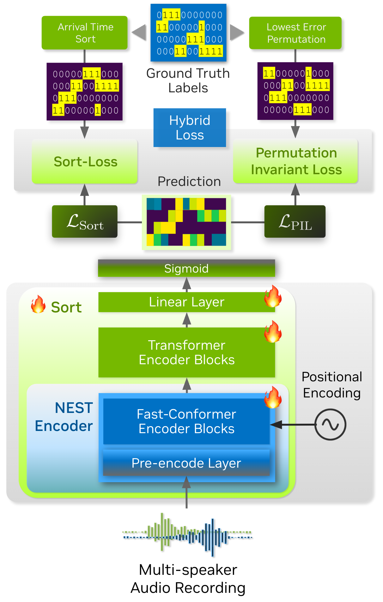
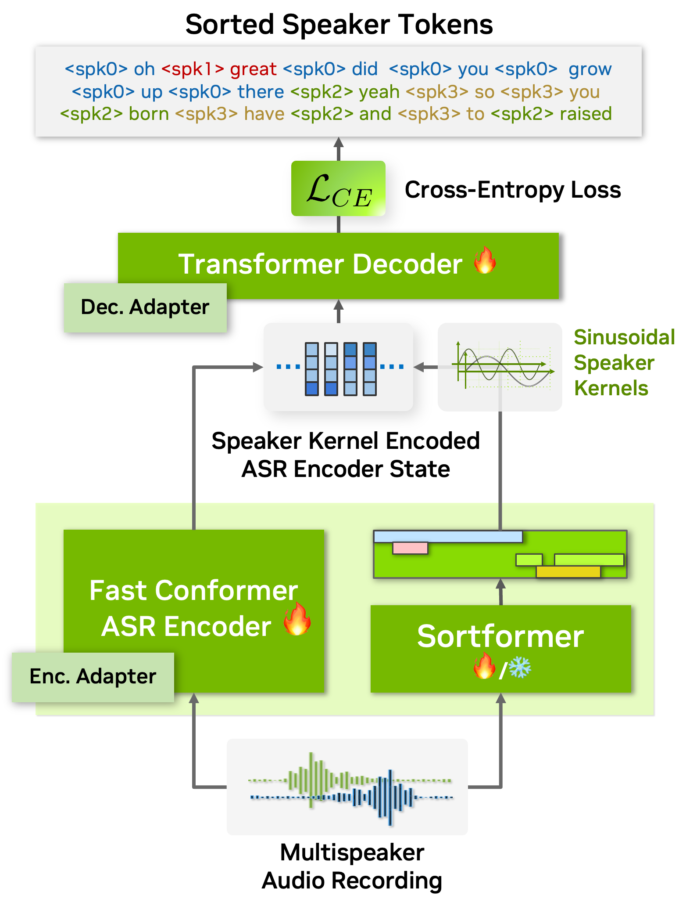

29 Speaker Diarization
Speaker diarization answers the question “who spoke when?” in a multi-speaker audio recording. Given a discrete-time audio signal \(\mathbf{x} = (x_1, x_2, \ldots, x_T) \in \mathbb{R}^T\), the task is to produce a set of labeled time intervals \(\{(t_s^{(k)}, t_e^{(k)}, s^{(k)})\}_{k=1}^{K}\), where each tuple denotes a start time, end time, and speaker identity drawn from an a-priori unknown set \(\mathcal{S}\). Neither the number of speakers \(|\mathcal{S}|\) nor their identities are assumed known in the general case.
Here \(T\) denotes the total number of discrete samples in the recording, obtained by sampling the continuous pressure signal at rate \(f_s\) (typically 16 kHz for speech). As in speech recognition, the raw waveform is rarely fed directly to a model; it is first converted to a sequence of log-Mel feature frames, or to contextualised representations from a self-supervised encoder. Section 28.1.1 covers that front-end in detail, and Section 29.1.1 below describes the choices specific to diarization.
29.1 Notation and Key Concepts
This section defines notation and terminology used throughout the chapter.
29.1.1 Input Features for Diarization
Diarization inherits the standard speech front-end described in Section 28.1.1: the waveform is sliced into overlapping frames ($$25 ms with a 10 ms hop), transformed by STFT, projected onto \(F\) Mel-scaled triangular filters, and log-compressed. Throughout this chapter, \(\mathbf{x}_t \in \mathbb{R}^{F}\) denotes one such log-Mel frame — a single column of the spectrogram \(\mathbf{M} \in \mathbb{R}^{F \times T_{\text{frames}}}\), giving the full frequency spectrum at one time step — and \(T_{\text{frames}} \approx 100 \times \text{duration (s)}\).
What differs from recognition is which information the features must preserve. ASR benefits from discarding speaker identity, since it is nuisance variation with respect to the transcript. Diarization needs exactly the opposite: speaker identity is the signal, and phonetic content is the nuisance. This asymmetry shapes both the feature choice and the layer selection discussed below.
Self-supervised representations. Modern systems increasingly replace or augment log-Mel features with representations from large self-supervised encoders — wav2vec 2.0 (Baevski et al. 2020), HuBERT (Hsu et al. 2021), and above all WavLM (Chen et al. 2022), whose denoising and simulated-overlap pre-training objective makes it the strongest available speaker encoder. These models consume the raw waveform and emit contextualised frame-level representations \(\mathbf{H} \in \mathbb{R}^{T' \times D'}\), where \(T'\) reflects the model’s downsampling factor (typically \(\times 320\) at 16 kHz, yielding 50 frames/s). The training objectives themselves are treated in Chapter 27; here we are concerned only with their use as features.
Which layer to use? This is where the ASR/diarization asymmetry becomes concrete. Layer-wise probing (Section 27.5) consistently finds that lower Transformer layers encode acoustic and speaker-discriminative information while middle and upper layers encode phonetic and semantic content. ASR systems therefore favour the upper layers, and diarization and speaker verification favour the lower ones — a rare case where two tasks want opposite ends of the same network. Common practice is the learnable weighted sum of Equation 27.8, which lets the downstream head discover the right mixture rather than fixing it by hand.
29.1.2 Speaker Diarization
| Concept | Symbol | Definition |
|---|---|---|
| Speaker set | \(\mathcal{S} = \{s_1, \ldots, s_N\}\) | The (unknown) set of \(N\) speakers in the recording. |
| Speaker activity | \(y_{t,s} \in \{0, 1\}\) | Binary label: is speaker \(s\) active at frame \(t\)? |
| Diarization output (hypothesis) | \(\hat{\mathbf{Y}} \in [0,1]^{T \times S}\) | Predicted speaker activity matrix (\(S\) output slots). |
| Reference (ground truth) | \(\mathbf{Y} \in \{0,1\}^{T \times N}\) | Ground-truth speaker activity matrix. |
| Cluster | \(c\) | A set of segments or frames grouped by the system as belonging to one speaker. |
| RTTM | — | Rich Transcription Time Marked: standard file format encoding speaker segments as (file, start, duration, speaker_id). |
29.1.3 Evaluation Terminology
| Concept | Definition |
|---|---|
| Forgiveness collar | A symmetric time window (typically \(\pm 0.25\) s) around each reference speaker-turn boundary that is excluded from scoring, to account for inherent annotation ambiguity. |
| Scored region | The portion of the recording that is evaluated (total duration minus collar exclusions and any explicitly un-scored intervals). |
| Speaker mapping | The optimal one-to-one assignment between hypothesis speaker labels and reference speaker labels, found via the Hungarian algorithm to minimise speaker error. |
| DER | Diarization Error Rate (see Section 29.4.2). |
| JER | Jaccard Error Rate (see Section 29.4.3). |
| WER | Word Error Rate, the standard ASR metric (Section 28.11.1). Used here only as the basis for cpWER. |
| CTC | Connectionist Temporal Classification (Section 28.6.1): a loss that marginalises over all valid alignments between input frames and output tokens, allowing training without frame-level alignment labels. |
| cpWER | Concatenated minimum-permutation WER (see Section 29.4.6). |
29.2 Historical Overview
Speaker diarization research spans roughly three decades. Table 29.3 summarises the key milestones of the deep learning era, which this chapter covers in full.
| Era | Years | Key Ideas | Representative Works |
|---|---|---|---|
| x-vector / d-vector | 2017–2020 | Neural speaker embeddings, spectral clustering | Snyder et al. (2018); Wan et al. (2018); Desplanques et al. (2020) |
| End-to-end (EEND) | 2019–present | Joint segmentation & clustering with PIT | Fujita, Kanda, Horiguchi, Xue, et al. (2019); Horiguchi et al. (2020); Landini et al. (2023) |
| Foundation models | 2022–present | Self-supervised representations, joint ASR+diar | Chen et al. (2022); Park et al. (2024); Cornell et al. (2024) |
29.2.1 Neural Speaker Embeddings: x-vectors and d-vectors (2017–2020)
Before neural embeddings, the dominant approach used i-vectors (Dehak et al. 2011) — fixed-dimensional representations obtained via factor analysis over Gaussian Mixture Model statistics, scored with Probabilistic Linear Discriminant Analysis (PLDA). Deep neural networks replaced this classical pipeline, yielding far more discriminative speaker representations without requiring a GMM or T-matrix. Two neural embedding families emerged:
d-vectors (Variani et al. 2014; Wan et al. 2018) process the audio as a sequence of log-Mel frames (Section 29.1.1). A neural network (often LSTM-based) maps each frame to a hidden state \(\mathbf{h}_t\), and the hidden states are averaged over the \(T_{\text{frames}}\) frames of an utterance to produce a fixed-dimensional speaker embedding. The Generalized End-to-End (GE2E) loss (Wan et al. 2018) trains the network by contrasting embeddings within and across speakers:
\[ \mathcal{L}_{\text{GE2E}} = -\sum_{j,i} \left[ \mathbf{S}_{ji,j} - \log \sum_{k=1}^{N} \exp(\mathbf{S}_{ji,k}) \right] \tag{29.1}\]
where \(\mathbf{S}_{ji,k} = w \cdot \cos(\mathbf{e}_{ji}, \mathbf{c}_k) + b\) is the scaled cosine similarity between embedding \(\mathbf{e}_{ji}\) (speaker \(j\), utterance \(i\)) and centroid \(\mathbf{c}_k\) of speaker \(k\).
x-vectors (Snyder et al. 2018) use a Time-Delay Neural Network (TDNN) (Peddinti et al. 2015) — the subsampled dilated convolutional stack developed for hybrid acoustic models (Section 28.5) — with a statistics pooling layer that summarises the sequence of \(T_{\text{frames}}\) acoustic feature frames into a fixed-size representation by computing their mean and standard deviation:
\[ \boldsymbol{\mu} = \frac{1}{T_{\text{frames}}}\sum_{t=1}^{T_{\text{frames}}} \mathbf{h}_t, \qquad \boldsymbol{\sigma} = \sqrt{\frac{1}{T_{\text{frames}}}\sum_{t=1}^{T_{\text{frames}}} \mathbf{h}_t^2 - \boldsymbol{\mu}^2} \tag{29.2}\]
where \(\mathbf{h}_t \in \mathbb{R}^d\) is the TDNN hidden state at feature frame \(t\) (derived from log-mel filterbank features, not raw samples). The concatenation \([\boldsymbol{\mu};\, \boldsymbol{\sigma}]\) is passed through feed-forward layers to produce the embedding. Training uses additive angular margin softmax (AAM-Softmax):
\[ \mathcal{L}_{\text{AAM}} = -\log \frac{e^{s\,(\cos(\theta_{y} + m))}}{e^{s\,(\cos(\theta_{y}+m))} + \sum_{k \neq y} e^{s\,\cos\theta_k}} \tag{29.3}\]
where \(\theta_y\) is the angle between the embedding and the weight vector of the true class \(y\), \(m\) is the angular margin, and \(s\) is the scaling factor.
The ECAPA-TDNN (Desplanques et al. 2020) architecture extended x-vectors with Squeeze-and-Excitation blocks, multi-scale feature aggregation (Res2Net), and attentive statistics pooling, achieving state-of-the-art speaker verification and improving downstream diarization.
Diarization pipeline. Neural embeddings are extracted from short, overlapping windows (typically 1.5–3 s), then clustered. Spectral clustering (Wang et al. 2018; Park et al. 2020) became the method of choice, using a refined affinity matrix \(\mathbf{A}\) with entries
\[ A_{ij} = \frac{\cos(\mathbf{e}_i, \mathbf{e}_j) - r_{\max}}{1 - r_{\max}} \tag{29.4}\]
where \(r_{\max}\) is an estimate of the maximum intra-speaker cosine distance. The number of speakers is determined from the eigengap of the Laplacian (Normalized Maximum Eigengap, NME) (Park et al. 2020).
Why it mattered. Neural embeddings are far more discriminative than i-vectors, train on orders of magnitude more data, and require no UBM or T-matrix estimation.
29.2.2 VBx: Variational Bayes HMM Clustering
An alternative to spectral clustering is the VBx approach (Landini et al. 2022), which models x-vector sequences with a Bayesian HMM whose emission distributions are PLDA-based:
\[ p(\mathbf{e}_{1:T} \mid \boldsymbol{\theta}) = \sum_{\mathbf{q}} \prod_{t=1}^{T} p(\mathbf{e}_t \mid q_t, \boldsymbol{\theta})\, p(q_t \mid q_{t-1}) \tag{29.5}\]
Variational Bayes inference approximates the posterior over speaker assignments \(\mathbf{q}\) and speaker-specific parameters \(\boldsymbol{\theta}\). VBx naturally handles speaker turn dynamics through transition probabilities and provides calibrated speaker posteriors.
29.3 Open-Source Landscape
Reproducible research in diarization has benefited enormously from open-source toolkits. Table 29.4 summarises the major projects.
| Toolkit | Language | Key Capabilities | Pretrained Models | Repository |
|---|---|---|---|---|
| pyannote.audio | Python / PyTorch | Full pipeline: SAD, OSD, embedding, clustering; powerset training | Yes (Hugging Face) | pyannote/pyannote-audio |
| NeMo | Python / PyTorch | Multi-scale diarization (MSDD), Sortformer, neural VAD, ASR integration | Yes (NGC / HF) | NVIDIA/NeMo |
| Kaldi | C++ / Bash | x-vector extraction, PLDA, AHC and VBx clustering | Recipe-based | kaldi-asr/kaldi |
| SpeechBrain | Python / PyTorch | ECAPA-TDNN, spectral clustering, speaker verification | Yes (HF) | speechbrain/speechbrain |
| Wespeaker | Python / PyTorch | Speaker embedding training and extraction | Yes | wenet-e2e/wespeaker |
| EEND (Hitachi) | Python / PyTorch | End-to-end neural diarization (SA-EEND, EEND-EDA) | Yes | hitachi-speech/EEND |
| VBx | Python | Variational Bayes HMM x-vector clustering | N/A | BUTSpeechFIT/VBx |
| dscore | Python | DER / JER evaluation scoring | N/A | nryant/dscore |
| DOVER-Lap | Python | System combination for overlapping diarization outputs | N/A | desh2608/dover-lap |
29.3.1 pyannote.audio
pyannote.audio (Bredin et al. 2020; Bredin 2023) is the most actively maintained end-to-end diarization toolkit. Its modular pipeline consists of:
- Voice Activity Detection (VAD) — a segmentation model based on SincNet + LSTM or PyanNet.
- Overlapped Speech Detection (OSD) — trained jointly or separately.
- Speaker Embedding Extraction — using a pretrained model (e.g., ECAPA-TDNN or WavLM-based).
- Clustering — agglomerative or spectral.
- Resegmentation — optional Viterbi-based refinement.
Recent versions (3.x) introduced a powerset multi-class segmentation model (Plaquet and Bredin 2023) that jointly predicts local speaker activities for up to \(K\) speakers per frame, sidestepping the need for a separate OSD module.
All models are distributed via the Hugging Face Hub, enabling two-line inference:
from pyannote.audio import Pipeline
pipeline = Pipeline.from_pretrained(
"pyannote/speaker-diarization-3.1",
use_auth_token="YOUR_HF_TOKEN",
)
diarization = pipeline("audio.wav")
for turn, _, speaker in diarization.itertracks(yield_label=True):
print(f"{turn.start:.1f} -- {turn.end:.1f}: {speaker}")29.3.2 NVIDIA NeMo
NeMo’s speaker diarization module (Park et al. 2022) provides both a clustering pipeline and an end-to-end Sortformer diarizer. Figure 29.1 shows the cascaded architecture.

The multi-scale diarization decoder (MSDD) fuses embeddings extracted at different time scales (0.5 s, 1.5 s, 3.0 s) through a neural network.
from nemo.collections.asr.models import ClusteringDiarizer
config = "diar_infer_telephonic.yaml" # or meeting, general
diarizer = ClusteringDiarizer(cfg=config)
diarizer.diarize()29.3.3 Kaldi and VBx
Kaldi (Povey et al. 2011) established many of the baseline recipes still used today. The callhome_diarization and ami recipes demonstrate the full x-vector + AHC pipeline. The standalone VBx repository from BUT (Landini et al. 2022) wraps the Variational Bayes HMM clustering in a Python-friendly interface and is frequently used as a strong baseline.
29.3.4 SpeechBrain and Wespeaker
SpeechBrain (Ravanelli et al. 2021) provides recipes for training ECAPA-TDNN and ResNet-based speaker encoders on VoxCeleb, with downstream diarization via spectral clustering. Wespeaker (Wang et al. 2023) focuses specifically on speaker embedding training and offers a variety of architectures (ResNet, ECAPA-TDNN, CAM++) with pretrained checkpoints.
29.4 Benchmarks and Evaluation
29.4.1 Standard Datasets
| Dataset | Domain | Hours | Speakers | Overlap | Reference |
|---|---|---|---|---|---|
| AMI | Meeting (headset + array) | ~100 h | 4/meeting | ~15 % | Carletta et al. (2005) |
| CALLHOME | Telephone conversations | ~20 h | 2–7 | ~13 % | National Institute of Standards and Technology (2008) |
| DIHARD III | Diverse (clinical, web, meeting, …) | ~40 h | varied | up to 30 % | Ryant et al. (2021) |
| VoxConverse | YouTube (in the wild) | ~64 h | 1–21 | ~3.4 % | Nagrani et al. (2020) |
| CHiME-5/6 | Dinner parties (distant mic) | ~50 h | 4 | ~20 % | Watanabe et al. (2020) |
| NIST SRE / RT | Broadcast + meeting | varied | varied | varied | Fiscus et al. (2006) |
29.4.2 Diarization Error Rate (DER)
The Diarization Error Rate is the standard metric, defined as the fraction of scored time that is incorrectly attributed:
\[ \text{DER} = \frac{t_{\text{FA}} + t_{\text{Miss}} + t_{\text{SE}}}{T_{\text{scored}}} \tag{29.6}\]
where:
- \(t_{\text{FA}}\): False alarm — non-speech regions incorrectly labeled as speech.
- \(t_{\text{Miss}}\): Missed speech — speech regions incorrectly labeled as non-speech.
- \(t_{\text{SE}}\): Speaker error — speech correctly detected but attributed to the wrong speaker.
- \(T_{\text{scored}}\): Total duration of the scored region (excluding any forgiveness collar around reference boundaries).
Evaluation typically uses a forgiveness collar of \(\pm 0.25\) s around each reference speaker-turn boundary. Within this collar, no errors are counted, because human annotators themselves disagree on the exact location of turn boundaries. The mapping between hypothesis and reference speakers is determined by the Hungarian algorithm (optimal one-to-one assignment minimising speaker error).
DER is computed by the NIST md-eval.pl script or its Python reimplementation in pyannote.metrics / dscore. The two differ slightly in tie-breaking and overlap handling; always report which tool was used.
29.4.2.1 DER Decomposition: Understanding Error Types
DER is the sum of three independent error components. Decomposing DER reveals why a system fails:
\[ \text{DER} = \underbrace{\frac{t_{\text{FA}}}{T_{\text{scored}}}}_{\text{False Alarm Rate}} + \underbrace{\frac{t_{\text{Miss}}}{T_{\text{scored}}}}_{\text{Miss Rate}} + \underbrace{\frac{t_{\text{SE}}}{T_{\text{scored}}}}_{\text{Speaker Confusion Rate}} \tag{29.7}\]
| Component | Symptom | Typical Cause |
|---|---|---|
| High false alarm | System hallucinates speech in silence/noise | Over-sensitive VAD |
| High miss | System drops real speech | Under-sensitive VAD; failure on quiet speakers |
| High speaker confusion | Correct speech detection, wrong speaker label | Poor embeddings; clustering errors; overlap misattribution |
This decomposition connects directly to the Coverage and Purity clustering metrics discussed below: high miss rate often correlates with low coverage (speakers are fragmented or dropped), while high confusion rate correlates with low purity (clusters mix multiple speakers).
29.4.3 Jaccard Error Rate (JER)
The Jaccard Error Rate (Ryant et al. 2021) offers a per-speaker complementary view:
\[ \text{JER} = \frac{1}{|\mathcal{S}|} \sum_{s \in \mathcal{S}} \left(1 - \frac{|R_s \cap H_{\hat{s}}|}{|R_s \cup H_{\hat{s}}|}\right) \tag{29.8}\]
where \(R_s\) is the set of scored frames for reference speaker \(s\), and \(H_{\hat{s}}\) is the hypothesis region assigned to \(s\) via optimal mapping. JER treats each speaker equally regardless of how much they spoke, making it more sensitive to errors on short-duration speakers.
29.4.4 Coverage and Purity
Coverage and Purity are set-theoretic cluster quality measures that compare an estimated clustering (hypothesis) against ground-truth speaker labels (reference).
Let \(s\) denote a ground-truth speaker set (all frames belonging to one true speaker), \(c\) denote a predicted cluster (all frames assigned to one cluster), \(|\cdot|\) denote the number of frames, and \(s \cap c\) denote the overlap between a true speaker and a predicted cluster.
\[ \text{Coverage}(s) = \frac{\max_c |s \cap c|}{|s|}, \qquad \text{Purity}(c) = \frac{\max_s |c \cap s|}{|c|} \tag{29.9}\]
Intuition.
- Coverage asks: “How much of a true speaker is captured by a single predicted cluster?” It is a recall-like measure of speaker completeness.
- High coverage: the system keeps each speaker’s speech in one cluster.
- Low coverage: the speaker is fragmented across multiple clusters (over-clustering).
- Purity asks: “How much of a predicted cluster belongs to a single true speaker?” It is a precision-like measure of cluster consistency.
- High purity: each cluster contains mostly one speaker.
- Low purity: the cluster mixes multiple speakers (under-clustering).
Trade-off. Coverage and purity reflect a fundamental clustering trade-off:
- Over-clustering (too many clusters) \(\Rightarrow\) high purity but low coverage.
- Under-clustering (too few clusters) \(\Rightarrow\) high coverage but low purity.
Aggregate scores are computed by averaging coverage over all reference speakers and purity over all predicted clusters.
Connection to DER. Coverage and purity help diagnose why DER is high:
- Low coverage \(\Rightarrow\) speaker splitting \(\Rightarrow\) elevated miss rate and speaker confusion.
- Low purity \(\Rightarrow\) speaker mixing \(\Rightarrow\) elevated speaker confusion rate.
While DER and JER are the standard evaluation metrics reported in papers, coverage/purity are valuable diagnostic tools during system development.
29.4.5 Boundary Metrics
Boundary metrics evaluate how accurately a system detects speaker change points (turn boundaries), independently of the clustering quality.
Given a set of reference change points \(\mathcal{B}_{\text{ref}}\) and hypothesis change points \(\mathcal{B}_{\text{hyp}}\), a hypothesis boundary is considered a true positive if it falls within a tolerance window \(\delta\) (typically 0.25 s) of a reference boundary:
\[ \text{Precision} = \frac{|\{b \in \mathcal{B}_{\text{hyp}} : \exists\, b' \in \mathcal{B}_{\text{ref}},\, |b - b'| \leq \delta\}|}{|\mathcal{B}_{\text{hyp}}|} \tag{29.10}\]
\[ \text{Recall} = \frac{|\{b \in \mathcal{B}_{\text{ref}} : \exists\, b' \in \mathcal{B}_{\text{hyp}},\, |b - b'| \leq \delta\}|}{|\mathcal{B}_{\text{ref}}|} \tag{29.11}\]
\[ \text{F1} = \frac{2 \cdot \text{Precision} \cdot \text{Recall}}{\text{Precision} + \text{Recall}} \tag{29.12}\]
High boundary F1 indicates that the system accurately detects where speaker turns occur, even if the speaker labels assigned to each segment may not be perfectly correct. Boundary metrics are particularly useful for evaluating the segmentation front-end (VAD + change-point detection) in isolation.
29.4.6 cpWER: Evaluating Joint ASR + Diarization
When diarization is evaluated jointly with ASR, the standard metric is concatenated minimum-permutation Word Error Rate (cpWER). The idea is straightforward:
- For each possible mapping between hypothesis speakers and reference speakers, concatenate the per-speaker transcripts in a consistent order.
- Compute WER on the concatenated strings.
- Report the minimum WER over all speaker permutations.
\[ \text{cpWER} = \min_{\phi \in \text{Perm}(\mathcal{S})} \text{WER}\!\left(\bigoplus_{s} R_s,\; \bigoplus_{s} H_{\phi(s)}\right) \tag{29.13}\]
where \(R_s\) is the reference transcript for speaker \(s\), \(H_{\phi(s)}\) is the hypothesis transcript assigned to speaker \(s\) under permutation \(\phi\), and \(\bigoplus\) denotes concatenation.
cpWER jointly penalises both ASR errors (wrong words) and diarization errors (words attributed to the wrong speaker). A word assigned to the wrong speaker becomes either a deletion in one speaker’s stream and an insertion in another’s, or a substitution, inflating WER relative to oracle diarization.
29.4.7 Evaluation in Practice
A standard evaluation pipeline:
- Convert system output and reference to RTTM format.
- Apply scoring with a forgiveness collar (typically 0.25 s) and optionally exclude overlapping regions.
- Compute DER and JER using
dscore,pyannote.metrics, ormd-eval.pl. - Report results with and without overlap scoring, since many systems were historically evaluated ignoring overlap.
# Example using dscore
python -m dscore -r reference.rttm -s hypothesis.rttm --collar 0.2529.5 Modern Architectures and Approaches
Modern speaker diarization broadly falls into three paradigms: embedding + clustering pipelines, end-to-end neural diarization (EEND), and hybrid systems that combine elements of both.
29.5.1 Embedding + Clustering Pipelines
The dominant production architecture remains a modular pipeline:
Audio → VAD → Segmentation → Embedding → Clustering → ResegmentationEach stage can be independently improved. State-of-the-art systems typically use:
- Embedding: ECAPA-TDNN (Desplanques et al. 2020) or self-supervised representations (WavLM (Chen et al. 2022), HuBERT (Hsu et al. 2021)) fine-tuned for speaker tasks.
- Clustering: Spectral clustering with NME (Park et al. 2020) or VBx (Landini et al. 2022).
- Overlap handling: A separate overlap detection model identifies multi-speaker regions, which are then assigned to the most likely pair of speakers.
29.5.1.1 Embedding Learning Objectives
Beyond AAM-Softmax (Equation 29.3), common objectives include:
Triplet loss. Given an anchor \(\mathbf{a}\), a positive \(\mathbf{p}\) (same speaker), and a negative \(\mathbf{n}\) (different speaker):
\[ \mathcal{L}_{\text{triplet}} = \max\!\left(0,\; \|\mathbf{a} - \mathbf{p}\|_2 - \|\mathbf{a} - \mathbf{n}\|_2 + \alpha\right) \tag{29.14}\]
where \(\alpha > 0\) is the margin.
Prototypical contrastive loss. Each class prototype is the mean embedding of its support set:
\[ \mathcal{L}_{\text{proto}} = -\log \frac{\exp(-d(\mathbf{e}, \mathbf{c}_y))}{\sum_{k} \exp(-d(\mathbf{e}, \mathbf{c}_k))} \tag{29.15}\]
where \(d(\cdot, \cdot)\) is a distance function (often squared Euclidean or negative cosine similarity).
29.5.1.2 Spectral Clustering
Given an affinity matrix \(\mathbf{A} \in \mathbb{R}^{N \times N}\), spectral clustering proceeds as:
- Compute the symmetric normalised Laplacian: \(\mathbf{L}_{\text{sym}} = \mathbf{I} - \mathbf{D}^{-1/2}\mathbf{A}\mathbf{D}^{-1/2}\), where \(\mathbf{D} = \text{diag}(\mathbf{A}\mathbf{1})\).
- Compute the \(k\) smallest eigenvectors \(\mathbf{U} \in \mathbb{R}^{N \times k}\).
- Row-normalise \(\mathbf{U}\) and apply k-means.
The number of clusters \(k\) is selected via the Normalised Maximum Eigengap:
\[ k^{*} = \arg\max_{k \in \{1, \ldots, K_{\max}\}} \frac{\lambda_{k+1} - \lambda_k}{\lambda_{k+1}} \tag{29.16}\]
where \(\lambda_1 \leq \lambda_2 \leq \ldots\) are eigenvalues of \(\mathbf{L}_{\text{sym}}\).
29.5.1.3 Agglomerative Hierarchical Clustering (AHC)
AHC with PLDA scoring iteratively merges the two clusters with the highest log-likelihood ratio until the score drops below a threshold \(\tau\). When combined with VBx re-clustering, this yields competitive results on most benchmarks.
29.5.2 End-to-End Neural Diarization (EEND)
EEND models (Fujita, Kanda, Horiguchi, Nagamatsu, et al. 2019; Fujita, Kanda, Horiguchi, Xue, et al. 2019) reformulate diarization as a multi-label classification problem. Given \(T\) frames and a maximum of \(S\) speakers, the model predicts a posterior matrix \(\hat{\mathbf{Y}} \in [0,1]^{T \times S}\) where \(\hat{y}_{t,s}\) is the probability that speaker \(s\) is active at frame \(t\).
29.5.2.1 Self-Attention EEND (SA-EEND)
The model applies stacked Transformer encoder layers to a sequence of acoustic features:
\[ \mathbf{H}^{(l)} = \text{TransformerBlock}(\mathbf{H}^{(l-1)}), \qquad \hat{\mathbf{Y}} = \sigma(\mathbf{W}\,\mathbf{H}^{(L)} + \mathbf{b}) \tag{29.17}\]
where \(\mathbf{H}^{(0)}\) is the input feature sequence (e.g., log-mel filterbanks or self-supervised representations), \(L\) is the number of layers, and \(\sigma\) is the element-wise sigmoid.
29.5.2.2 Permutation-Free Training
Because the speaker labels are arbitrary, training uses a Permutation Invariant Training (PIT) loss (Yu et al. 2017):
\[ \mathcal{L}_{\text{PIT}} = \min_{\phi \in \text{Perm}(S)} \frac{1}{T} \sum_{t=1}^{T} \sum_{s=1}^{S} \text{BCE}(\hat{y}_{t,\phi(s)},\, y_{t,s}) \tag{29.18}\]
where \(\text{Perm}(S)\) is the set of all permutations of \(S\) speakers, and BCE is the binary cross-entropy. The factorial cost is tractable because \(S\) is typically small (\(\leq 4\)).
Figure 29.2 illustrates the difference between PIT-based training (used in classical EEND) and Sort Loss (used in Sortformer).

29.5.2.3 EEND with Encoder-Decoder Attractors (EEND-EDA)
To handle a variable number of speakers, EEND-EDA (Horiguchi et al. 2020, 2022) introduces an LSTM-based encoder-decoder that generates speaker attractors \(\{\mathbf{a}_s\}_{s=1}^{S}\) from the encoder output. The diarization output is then
\[ \hat{y}_{t,s} = \sigma(\mathbf{h}_t^{\top} \mathbf{a}_s) \tag{29.19}\]
The decoder autoregressively produces attractors until it emits a special end-of-speakers token, thereby predicting \(|\mathcal{S}|\) implicitly.
29.5.2.4 DiaPer: Perceiver-Based Attractors
DiaPer (Landini et al. 2023) replaces the LSTM attractor decoder with a Perceiver-style cross-attention architecture, enabling better scaling to conversations with many speakers.
29.5.3 Hybrid Systems
Several state-of-the-art systems combine EEND-style local processing with clustering-based global reasoning:
Local EEND + global clustering: EEND is applied to short chunks (e.g., 10–30 s) to produce local speaker labels, then a global clustering step (using embeddings extracted from the EEND encoder) stitches labels across chunks. This approach was used by several top systems in the DIHARD III and VoxSRC challenges.
Target-Speaker Voice Activity Detection (TS-VAD): Given a set of speaker embeddings \(\{\mathbf{e}_s\}\) (obtained from an initial clustering pass), TS-VAD (Medennikov et al. 2020) predicts per-frame activity for each target speaker:
\[ \hat{y}_{t,s} = f_{\theta}(\mathbf{x}_t, \mathbf{e}_s) \tag{29.20}\]
This naturally handles overlap by conditioning on each speaker independently. The STC-CRSS system that won the CHiME-6 and DIHARD III challenges used TS-VAD as a core component.
Multi-scale diarization decoder (MSDD): NeMo’s MSDD (Park et al. 2022) fuses speaker embeddings from multiple temporal scales (0.5, 1.5, 3.0 s) through a pairwise neural scorer that estimates whether two segments belong to the same speaker.
29.5.4 Transformer and Attention Mechanisms in Diarization
Self-attention is central to modern EEND models (Equation 29.17). The key insight is that the self-attention mechanism naturally captures long-range speaker dependencies across frames. Given queries, keys, and values \(\mathbf{Q}, \mathbf{K}, \mathbf{V} \in \mathbb{R}^{T \times d}\):
\[ \text{Attention}(\mathbf{Q}, \mathbf{K}, \mathbf{V}) = \text{softmax}\!\left(\frac{\mathbf{Q}\mathbf{K}^{\top}}{\sqrt{d}}\right) \mathbf{V} \tag{29.21}\]
The quadratic complexity \(O(T^2)\) in sequence length limits direct application to long recordings. Strategies to address this include:
- Chunked processing with inter-chunk stitching.
- Efficient attention variants (e.g., Performer, Longformer-style sparse attention).
- Conformer blocks (Gulati et al. 2020) combining convolution and attention for local + global modeling (Section 28.7.1).
29.6 Streaming and Real-Time Diarization
Many practical applications (live captioning, meeting assistants, call centers) require diarization with low latency. This imposes several architectural constraints:
- Causal processing: The model must produce outputs using only past and current audio, not future context.
- Bounded memory: The system cannot store the entire recording.
- Incremental speaker inventory: New speakers may appear at any time and must be added to the inventory with minimal re-processing.
29.6.1 Chunked / Buffered Approaches
The most common streaming strategy processes audio in fixed-length chunks of \(C\) seconds with a look-back buffer of \(B\) seconds:
\[ \hat{\mathbf{Y}}_{\text{chunk}_n} = f_{\theta}\!\left(\mathbf{x}_{(n-1)C - B \;:\; nC}\right) \tag{29.22}\]
The buffer provides temporal context without requiring access to the full recording. Cross-chunk stitching is performed by:
- Matching speakers between consecutive chunks using embedding similarity.
- Maintaining a running speaker inventory (set of centroid embeddings).
pyannote.audio implements this via an online pipeline that processes chunks and merges outputs incrementally (Coria et al. 2021).
29.6.2 Online EEND with Speaker-Tracing Buffer
Xue et al. (Xue et al. 2021) proposed an online variant of EEND that maintains a speaker-tracing buffer — a fixed-size memory of the most recent frames per detected speaker. At each step:
- Concatenate the new chunk with the speaker-tracing buffer.
- Run EEND on the concatenated input.
- Update the buffer with the new frames, retaining the most informative segments per speaker.
This allows EEND to operate in a streaming fashion while maintaining speaker consistency across chunks.
29.6.3 Streaming Sortformer
Figure 29.3 shows the streaming variant of Sortformer from NeMo, which processes audio in overlapping chunks using a FIFO buffer and an Arrival-Order Speaker Cache (AOSC) to maintain speaker consistency.

29.6.4 Latency–Accuracy Trade-offs
Reducing chunk size \(C\) lowers latency but degrades accuracy because:
- Shorter chunks contain fewer speaker turns, providing less context.
- Spectral clustering within a chunk becomes unreliable with too few segments.
- EEND models have less context for disambiguating overlapping speakers.
Typical systems use chunks of 5–15 s with buffers of 5–10 s, achieving end-to-end latencies of 1–5 s while maintaining DER within 1–3 % absolute of the offline system.
29.6.5 Streaming Embedding + Clustering
For embedding-based systems, streaming operation requires:
- Incremental embedding extraction — extract embeddings from the new chunk.
- Online clustering update — assign new embeddings to existing clusters or create new clusters. Methods include:
- Online k-means with centroid updating.
- Incremental spectral clustering.
- VBx with forward-only message passing.
- Delayed decision / look-ahead — optionally delay output by a small window to improve robustness.
29.7 Joint ASR + Diarization Systems
Combining speech recognition with speaker diarization yields speaker-attributed transcription — the ultimate goal for many downstream applications (meeting minutes, medical transcription, call analytics).
29.7.1 Pipeline Approach
The most common architecture runs ASR and diarization independently and then fuses their outputs:
Audio → ASR → Timestamped transcript
↘ Diarization → Speaker segments
↓
Speaker-attributed transcriptAlignment is performed by mapping each word (with its timestamp) to the speaker who was active at that time. Challenges include:
- Timestamp resolution mismatch between ASR and diarization.
- Overlapping speech: Words in overlap regions may be attributed to the wrong speaker.
- Endpointing artifacts: ASR word boundaries are not perfectly aligned with true acoustic boundaries.
29.7.2 Serialized Output Training (SOT)
Kanda et al. (Kanda et al. 2020) proposed Serialized Output Training, which reformulates multi-speaker ASR as a single-speaker problem by concatenating speaker transcripts in chronological order, separated by a <sc> (speaker change) token:
\[ \mathbf{y}_{\text{SOT}} = [y_1^{(s_1)}, \ldots, y_{N_1}^{(s_1)}, \texttt{<sc>}, y_1^{(s_2)}, \ldots] \tag{29.23}\]
A standard encoder-decoder ASR model (e.g., Transformer or Conformer + attention decoder) is trained on this serialized target. At inference, speaker identities are recovered from the <sc> tokens.
29.7.3 End-to-End Speaker-Attributed ASR
More recent work (Kanda et al. 2021) extends the encoder-decoder framework with speaker-dependent output heads or speaker embeddings injected into the decoder. The joint model optimises:
\[ \mathcal{L}_{\text{joint}} = \mathcal{L}_{\text{ASR}} + \lambda_{\text{diar}} \, \mathcal{L}_{\text{diar}} + \lambda_{\text{spk}} \, \mathcal{L}_{\text{spk-embed}} \tag{29.24}\]
where \(\mathcal{L}_{\text{ASR}}\) is the CTC or attention-based ASR loss (Section 28.6), \(\mathcal{L}_{\text{diar}}\) is a diarization loss (e.g., PIT-based), and \(\mathcal{L}_{\text{spk-embed}}\) encourages discriminative speaker representations.
29.7.4 Sortformer
The Sortformer architecture (Park et al. 2024) from NVIDIA integrates diarization timestamps directly into the ASR token sequence. Figure 29.4 shows the model architecture.

Figure 29.5 shows how Sortformer integrates with ASR for speaker-attributed transcription.

29.7.5 Word-Level Diarization
An alternative to segment-level fusion is word-level diarization, which assigns a speaker label to each word directly. This can be achieved by:
- Using frame-level diarization posteriors \(\hat{\mathbf{Y}}\) and aligning them with CTC or attention-based word boundaries.
- Training a joint model that emits \((\text{word}, \text{speaker})\) tuples.
- Post-hoc assignment using speaker embeddings extracted at the word level.
29.8 Current Research Directions
29.8.1 Self-Supervised Representations for Diarization
Self-supervised encoders are now the default front-end (Section 29.1.1), but the open question is no longer whether to use them — it is whether the objectives that produced them are the right ones for this task. Every widely-used encoder was designed and benchmarked primarily for recognition, where speaker identity is nuisance variation to be suppressed. WavLM is the partial exception, and it is no coincidence that its simulated-overlap and denoising objectives make it the strongest speaker encoder available.
Three directions follow. Speaker-targeted pre-training asks what a pre-training objective designed for speaker discrimination from the outset would look like. Overlap-aware objectives extend WavLM’s mixing augmentation, since overlapping speech is the dominant residual error source (Section 29.8.6) and is precisely what single-speaker pre-training corpora lack. And layer selection remains empirical: the weighted-sum approach works, but nobody can yet predict which layers a new encoder will place speaker information in without probing it.
29.8.2 End-to-End Joint Models
The trend toward end-to-end systems that jointly perform VAD, speaker embedding, clustering, overlap detection, and optionally ASR is accelerating. Key challenges include:
- Scalability to long recordings (hours).
- Handling large speaker counts (\(|\mathcal{S}| > 10\)).
- Domain adaptation — models trained on meetings often degrade on telephone or broadcast data.
EEND-EDA (Section 29.5.2.3) and DiaPer (Landini et al. 2023) partially address the speaker-count problem, but robust generalisation to diverse domains remains open.
29.8.3 Multimodal Diarization
Audio-visual diarization (Chung et al. 2020) leverages visual cues (face detection, lip movement, gaze direction) to complement acoustic information. This is especially useful in:
- Video conferencing with camera feeds.
- Broadcast media with visible speakers.
- Scenarios with high acoustic overlap.
The fusion is typically performed at the embedding level:
\[ \mathbf{e}_{\text{fused}} = g(\mathbf{e}_{\text{audio}},\, \mathbf{e}_{\text{visual}}) \tag{29.25}\]
where \(g\) is a learned fusion function (concatenation + MLP, cross-attention, or gating mechanisms).
29.8.4 Speaker-Aware Large Language Models
An emerging direction integrates speaker information into large language models (LLMs) for meeting summarisation and dialogue understanding. This requires feeding speaker-attributed transcripts (from a diarization system) into the LLM, or jointly training the LLM to be speaker-aware.
Potential formulations include:
- Speaker tokens prepended to each utterance:
<spk:1> Hello <spk:2> Hi there. - Speaker embeddings concatenated with text token embeddings.
- Multi-turn dialogue modeling with explicit speaker tracking.
29.8.5 Scaling Laws and Large-Scale Pretraining
Recent work has explored how diarization performance scales with:
- Data volume — training on hundreds of thousands of hours of weakly labeled data (e.g., YouTube with pseudo-labels from a teacher system).
- Model size — scaling up embedding networks (e.g., from ECAPA-TDNN to large Conformers).
- Synthetic data augmentation — room impulse response simulation, noise/reverberation augmentation, and dynamic mixing of single-speaker recordings to create simulated multi-speaker audio.
29.8.6 Open Problems
Despite significant progress, several challenges remain:
- Domain mismatch: Systems trained on one domain (e.g., telephony) often generalise poorly to others (e.g., far-field meetings, clinical interviews).
- Overlapping speech: While overlap handling has improved, accurately diarising densely overlapped speech (e.g., cocktail-party scenarios) remains difficult.
- Short utterances: Brief backchannels (“uh-huh”, “yeah”) are frequently missed or misattributed.
- Large speaker counts: Most EEND models are limited to \(S \leq 4\) local speakers; scaling to dozens of speakers in a long recording requires hybrid approaches.
- Fairness and bias: Diarization performance varies across languages, accents, and speaker demographics; systematic evaluation of fairness is nascent.
- Evaluation methodology: DER conflates multiple error types, and its sensitivity to the forgiveness collar complicates comparison across studies. JER partially addresses this but is not yet universally adopted.
- Reproducibility: Despite the open-source toolkits listed in Section 29.3, exact reproduction of published results remains difficult due to differences in preprocessing, VAD, collar settings, and dataset splits.
29.9 Summary
Speaker diarization has evolved from GMM/HMM-based segmentation systems to sophisticated neural architectures that jointly model speaker identities, temporal dynamics, and overlapping speech. The field is converging on two complementary paradigms:
- Modular pipelines (embedding + clustering) that offer flexibility, interpretability, and strong baseline performance.
- End-to-end models (EEND, TS-VAD, Sortformer) that reduce error propagation and enable joint optimisation with ASR.
The availability of mature open-source toolkits (pyannote.audio, NeMo, SpeechBrain, Kaldi/VBx) and standardised benchmarks (AMI, DIHARD, VoxConverse) has accelerated progress and lowered the barrier to entry. Current research frontiers include self-supervised feature learning, multimodal fusion, streaming architectures, and tighter integration with large language models.
For the practitioner, the choice of system depends on the application constraints: pyannote.audio and NeMo offer the most complete out-of-the-box solutions with pretrained models, while Kaldi/VBx recipes provide maximum control for research experimentation.
29.10 Interview Questions
Q: Why can’t diarization models be trained with ordinary cross-entropy on fixed speaker labels?
There is no canonical ordering of speakers — “speaker 1” in the reference could correspond to output slot 2 in the model’s prediction, and this assignment is arbitrary and recording-specific. Permutation Invariant Training (Equation 29.18) solves this by minimizing the loss under the best assignment of output slots to reference speakers (searched over all \(S!\) permutations, tractable for small \(S\)). Sortformer’s Sort Loss avoids the search altogether by defining a canonical ordering (arrival time), so the model is trained against a single fixed target permutation.
Q: Why does DER use a forgiveness collar, and what happens if you omit it?
Human annotators disagree on the exact location of speaker-turn boundaries by tens to hundreds of milliseconds — this is inherent to the annotation task, not a system error. Without a collar, a system with perfect speaker assignment but boundaries shifted by 50 ms would be penalized as if it made real speaker-confusion errors. The collar (typically \(\pm0.25\)s) excludes these ambiguous regions from scoring, so DER reflects genuine errors in who is speaking rather than exactly when a turn begins or ends.
Q: When would you choose an embedding + clustering pipeline over an end-to-end (EEND) model in production?
Embedding + clustering pipelines scale naturally to an unbounded, unknown number of speakers and long recordings (clustering doesn’t have a fixed output-slot limit), and each stage (VAD, embedding, clustering) can be debugged and upgraded independently. EEND models handle overlapping speech and short utterances better and avoid error propagation across stages, but classical EEND is limited to a small fixed number of speakers (\(S\leq4\)) and struggles with hour-long recordings. In practice, hybrid systems (local EEND + global clustering, or TS-VAD on top of an initial clustering pass) combine EEND’s local accuracy with clustering’s scalability.
Q: A meeting-transcription product reports word-level speaker labels with a low DER but a much higher cpWER than expected. What would you investigate?
DER is computed on the diarization output alone (speaker activity vs. time), while cpWER additionally depends on ASR correctness and on how words are aligned to speaker segments. A low DER with high cpWER suggests the diarization segments themselves are accurate, but either (a) the ASR transcript has high WER independent of diarization, or (b) word-to-speaker alignment is failing — e.g., timestamp resolution mismatch between the ASR and diarization models, or words near speaker-turn boundaries (especially in overlap regions) being assigned to the wrong speaker’s stream, which cpWER penalizes as deletions/insertions even when both the words and the turn boundary are individually close to correct.
Q: How does TS-VAD handle overlapping speech better than spectral clustering on embeddings?
Spectral clustering assigns each segment/frame to exactly one cluster — if two speakers talk simultaneously, the segment’s embedding is some blend of both speakers’ characteristics and the frame can only be attributed to one of them. TS-VAD instead conditions a per-frame predictor independently on each target speaker’s embedding \(\mathbf{e}_s\) (Equation 29.20): \(\hat{y}_{t,s} = f_\theta(\mathbf{x}_t, \mathbf{e}_s)\) is computed separately for every \(s\), so multiple speakers can simultaneously be predicted as “active” at the same frame \(t\) — directly modeling overlap rather than forcing a single label per frame.